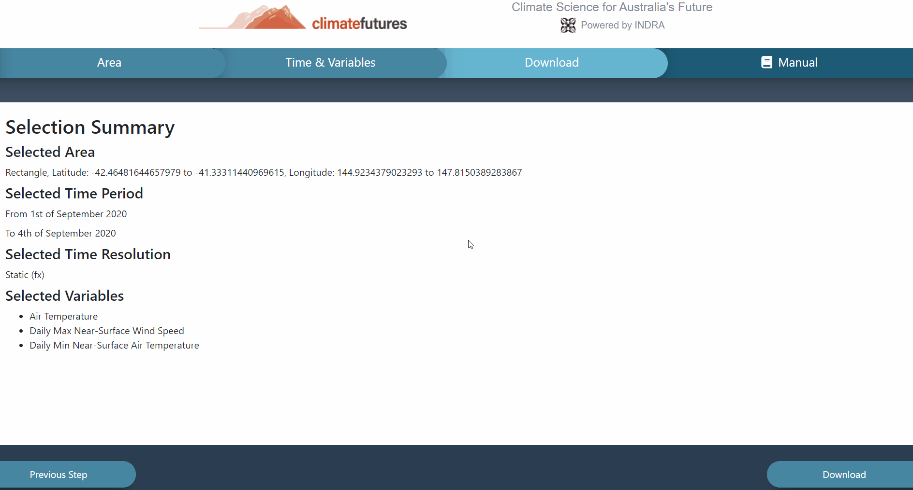
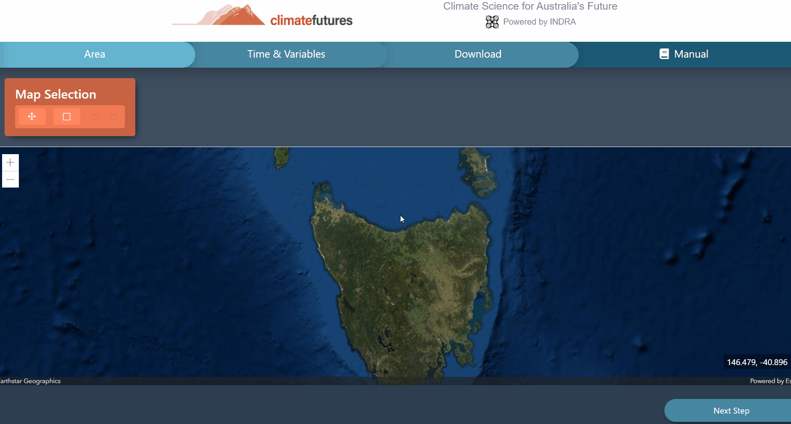

Interface
First of all, in the Climate futures data portal home page you need to select any particular area through map selection option by choosing rectangle, radius or polygon.
After selecting the map area you can follow up to the time and variables page by clicking next step. In this page, You need to select a time period according to your desirable need.
At this page, You also need to select multiple variables like humidity and temperature, wind direction or select any other variables by navigating ‘search variables tab” on the top right corner of the page.
After selecting the required items you can follow through our final page ‘Download page” by select ‘next step option’.
In this page, You can see the summary of your data selection process. If you want to make any kind of change in this selection process you can go back to the
previous pages by clicking “’previous step’ option at the bottom left corner of the page, On the other hand.
if you are satisfied with your selection summary you can download the data by clicking ‘download ‘ option on the right bottom corner of the page.
Overview of the buttons functions
This section will introduce you to the functions of all of the functional buttons that you will
use throughout the application.
-
Steps Selection
The data portal interface is broken up into seperate "steps" interfaces, these can be accessed by clicking into each individual steps' cards:
Area, Time & Variables, Download and Manual
across the top of the screen. The
Manual card will send you to a new tab, opening the manual (which your are currently reading), keeping your current tab with your selected step.

-
Previous Step, Next Step and Download buttons
The Previous Step button will allow you to go back to your previous step to modify changes, and the Next Step button will allow you to continue to your next step.

At the Download step, the Next Step button will be replaced by the Download button.
After pressing this button, the application will proceed to downloading your data.

-
Climate Futures Logo
At the top of the application, there will be a logo with the Climate Futures brand name, alongside with INDRA recognition. By clicking the Climate Futures brand name, you will be redirected to a new tab with the Climate Futures Homepage.
